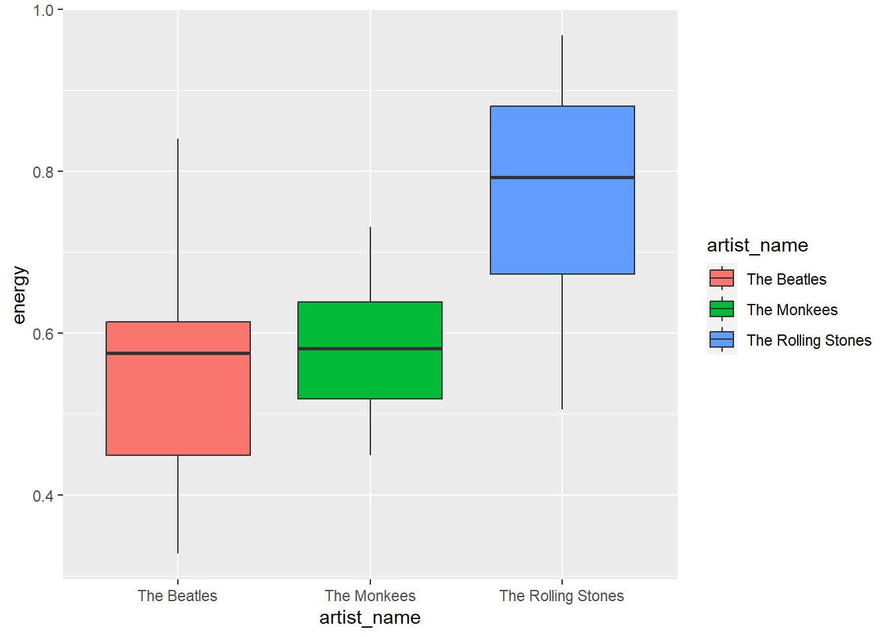
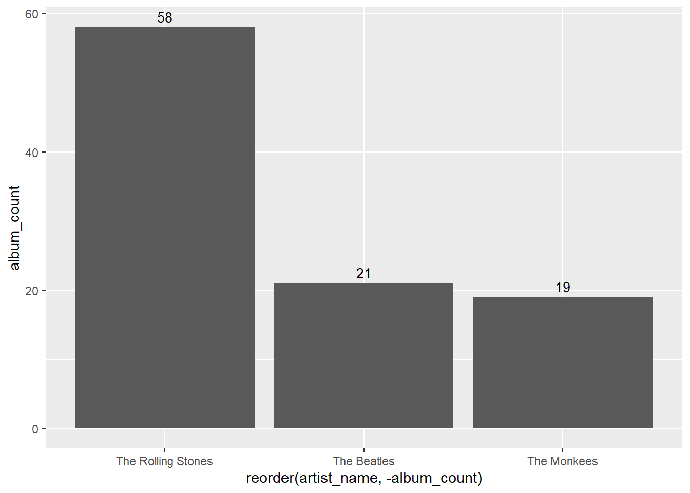

# Load the data from the R data file
load("music_data.rda")Initial Principles of Data Visualizations
Let’s analyze these group’s albums
Review of the Extract & Transform
Get & Clean
How did we get this data?
Extraction of Data:
We extracted data using the Spotify API and transformed it using various dplyr functions. Review Extraction and Transformation Process.
How did we clean this data?
Transformation of Data:
Bind Rows: Combiningall_tracks_df. See this section of the notes for more details.Filter Function: Filtering data inall_tracks_cleaned_df. Refer to this section of the notes for additional information.Group By and Summarize: Demonstrating these processes withalbum_info_dfandartist_overview_df. Further details can be found in this section of the notes.
Let’s load the data
str(album_info_df)Classes 'tbl_df', 'tbl' and 'data.frame': 98 obs. of 6 variables:
$ artist_name : chr "The Beatles" "The Beatles" "The Beatles" "The Beatles" ...
$ album_name : chr "A Hard Day's Night (Remastered)" "Abbey Road (Super Deluxe Edition)" "Beatles For Sale (Remastered)" "Get Back (Rooftop Performance)" ...
$ album_release_year: num 1964 2019 1964 2022 1965 ...
$ energy : num 0.634 0.376 0.604 0.555 0.608 ...
$ valence : num 0.797 0.431 0.802 0.613 0.783 ...
$ Number_of_Songs : int 7 14 6 5 9 22 45 7 4 50 ...Introduction to the package ggplot2
ggplot2
In this module, we will explore how to create visualizations using the ggplot2 package in R.
We’ll focus on understanding:
geoms: the different types of geometric objects
Summary Statistics: The stat_summary function can calculate summary statistics (like mean, median, min, max, etc.) for each group of data
Guides: the importance of labels and titles in making plots informative.
Lets visualize using ggplot
The power of
ggplot2
The ggplot2 package in R is a powerful and flexible system for creating data visualizations.
Built upon the principles of the Grammar of Graphics, it allows users to construct plots by layering components systematically.
ggplot2 is renowned for its ability to handle complex visualization tasks, offering a wide range of plot types and customization options.
library(ggplot2)ggplot(data = album_info_df)
Now that we have the data, …
We must specify the variable(s) that we are interested to create a visualization.
Principle 1: geoms
Importance of Variables
But wait … we have to understand
Variables
Typically, I determine:
What your question?
How many variables are in your question?
What are the variable types? Strings or numeric.
Based on this information we can then determine how we can represent that information in a visualization.
geoms in ggplot2
Definition: geoms (geometric objects) are the visual representations of data in ggplot2. Examples include points, lines, and bars.
Depending on the type of data and the story we want to tell, we choose different geoms.
Investigating Count Data - geom_bar
- What your question?
Which group had the most albums?
- How many variables are in your question?
2
- What are the variable types? Strings or numeric.
Type of Data: One string variable (Artist) and one string variable (Album Name)
Fill out the code as I explain each element of the code
# Bar plot to show the number of albums per artist
ggplot(data = album_counts_df,
mapping = aes(
x = reorder(artist_name, -album_count),
y = album_count
)
) +
geom_bar(stat = "identity")Sooo… Which group had the most albums?
Investigating Numeric Data - geom_boxplot
- What your question?
Which group’s albums had the highest energy levels?
- How many variables are in your question?
2
- What are the variable types? Strings or numeric.
Type of Data: One string variable (Artist) and one numeric variable (Energy)
Fill out the code as I explain each element of the code
Code and Visualization
# Box plot to show the distribution of energy levels per artist
ggplot(data = album_info_df,
mapping = aes(
x = artist_name,
y = energy,
fill = artist_name
)
) +
geom_boxplot() 
Sooo… Which group’s albums had the highest energy levels?
You can investigate more geoms here.
Questions
Question 1:
Replace the box plot with the violin plot using the geom_violin() function.
ggplot(data = album_info_df,
mapping = aes(
x = artist_name,
y = energy,
fill = artist_name
)
) +
geom_violin()What do you notice about the violin plot?
How does it differ from the box plot?
Answer: The violin and box plot both show the distribution of energy levels per artist. However, the violin plot shows where the data is concentrated better.
Principle 2: Stats within ggplot
Note
- Definition: In ggplot2, stats are key elements that help summarize and represent data. They allow us to visualize the central tendency or the most typical value in the data.
Code and Visualization
# Enhanced Violin plot with summary statistics for energy levels per artist
ggplot(data = album_info_df,
mapping = aes(
x = artist_name,
y = energy,
fill = artist_name
)
) +
geom_violin() +
stat_summary(
fun = mean
)Warning: Removed 3 rows containing missing values (`geom_segment()`).
Questions
Question 2: Adding Summary Statistics to Geoms
- Complete the code to overlay text on the bars using geom_text(). Use the
help()function to learn more about the geom_text() function.
ggplot(data = album_counts_df,
mapping = aes(
x = reorder(artist_name, -album_count),
y = album_count
)) +
geom_bar(stat = "identity") +
geom_text(mapping = aes(
label = album_count),
vjust = -0.5, # Adjust text just above the bars
size = 3.5) # Set text size
- How many albums do The Monkees have? [Numeric]
Principle 3: Guides - Legends and Annotations
Note
Definition: In ggplot2, guides are critical elements that enhance the interpretability of a plot. They include:
legends
axes labels
titles
other annotations
These serve as navigational tools that provide context and improve readability.
Lets go back to the violin plot we created earlier and add some labels and titles to make it more informative.
Code and Visualization
# Example code for adding labels to a plot
ggplot(data = album_info_df,
mapping = aes(
x = artist_name,
y = energy,
fill = artist_name
)
) +
geom_violin() +
stat_summary(fun = mean) +
labs(
title = "Energy Levels by Artist",
subtitle = "Comparison using violin plots with mean energy levels",
x = "Artist Name",
y = "Energy Level",
fill = "Artist Group"
)Warning: Removed 3 rows containing missing values (`geom_segment()`).
Questions
Question 3: Enhancing Plots with Labels
Create a scatter plot using geom_point to explore the relationship between energy and valence of albums. Edit the code to include a title, axis labels, and a color legend that are appropriate for the data being visualized. Specifically, set the title to ‘Energy vs Valence: Exploring Album Characteristics’, the subtitle to ‘A scatter plot illustrating the relationship between energy and valence in albums’, the x-axis label to ‘Energy’, and the y-axis label to ‘Valence’.
# Your code to add labels to a scatter plot goes here
ggplot(data = album_info_df ,
mapping = aes(
x = energy,
y = valence
)
) +
geom_point() +
labs(
title = "Energy vs Valence: Exploring Album Characteristics",
subtitle = "A scatter plot illustrating the relationship between energy and valence in albums",
x = "Energy",
y = "Valence"
)Go back and add labels (title, subtitle, x-axis label, y-axis label) to all the plots you created in this module. How does this change the way you interpret the plots?
Conclusion
Note
Today’s exploration of the ggplot2 package in R has taken us through the intricacies of Geoms, Stats, and Guides. We’ve utilized all_tracks_cleaned_df, album_info_df, and artist_overview_df to demonstrate the creation of compelling visualizations, from basic bar charts to insightful violin and scatter plots.
geoms showed the diverse ways data can be visually represented.
Stats added a layer of depth by integrating statistical summaries.
Guides enhanced our plots with clear legends and annotations, making them informative and accessible.